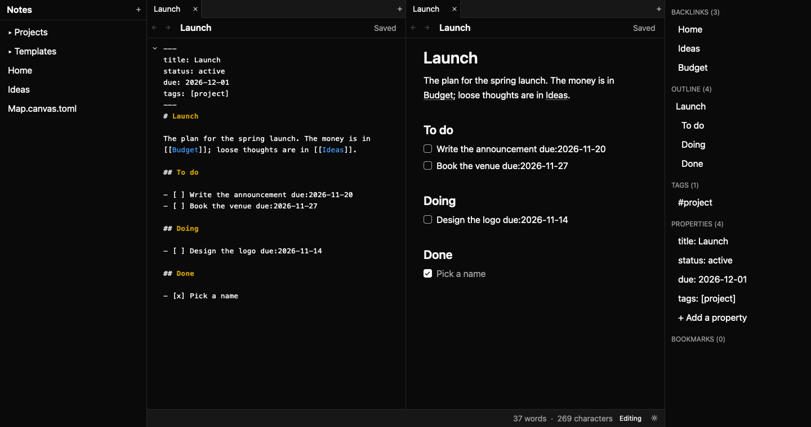
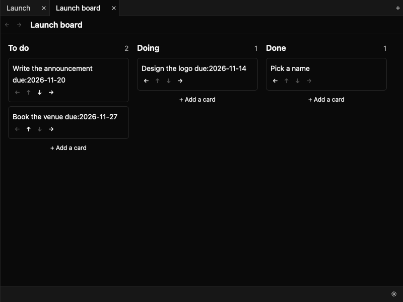
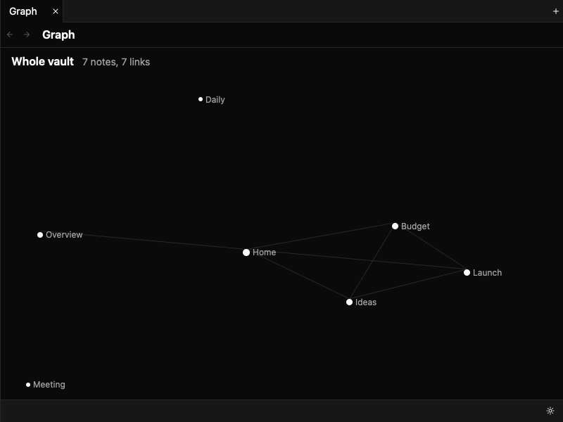
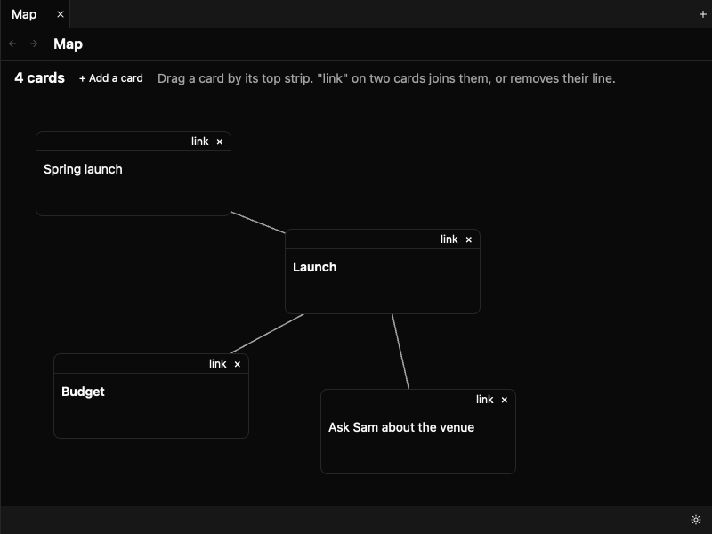
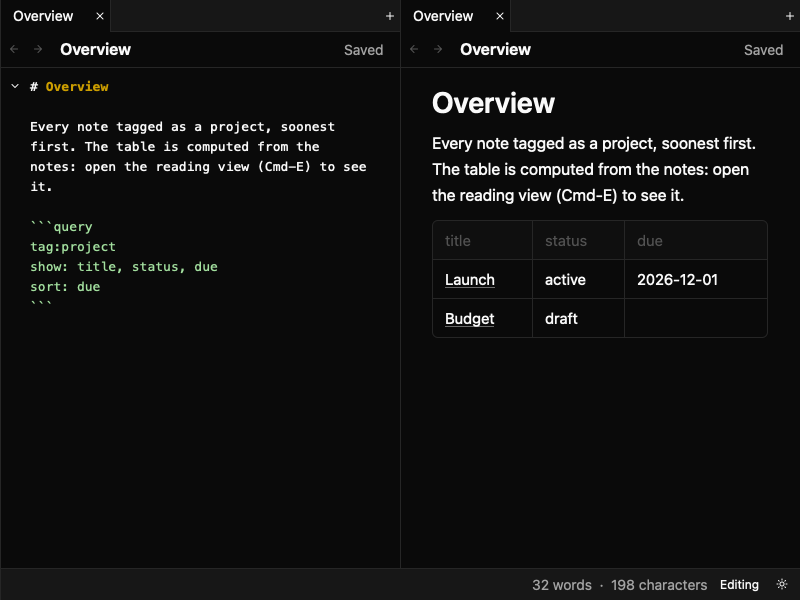

In development · build it from source
Diamond Markdown
A knowledge base of your own.
A native notes app for macOS and Linux. Your notes are plain Markdown files in a folder you choose, linked to each other with [[wikilinks]]. Written in Rust and drawn on the GPU, with no web view inside.
MIT licensed · macOS and Linux · No Electron · No account · No telemetry

Native
A real desktop app, written in Rust and drawn on the GPU. No Electron, no web view, no browser tab. On an M4 Mac mini it indexes 10,000 notes in about an eighth of a second and searches them in under 12 milliseconds.
Plain files
Notes are ordinary .md files in a folder you pick. The little Diamond keeps of its own, such as settings and bookmarks, is plain text beside them. Stop using Diamond tomorrow and every note still opens anywhere.
Yours
No account, no server, no telemetry. Diamond makes no network connections of its own. To keep versions or sync between computers, it uses git with a remote you choose, when you ask it to.
The tools to write, find and connect.
Type [[Note]]. Follow it with a click or ⌥↵. A link to a note that does not exist yet creates it.
Beside every note: what links to it, its headings and its tags, following what you type.
Go to a note by name (⌘O), or search every note (⌘⇧F) with tag: and path: filters.
Notes in tabs, panes side by side. Two views of one note stay in step as you type.
The rendered note beside the editor, following every keystroke (⌘⇧E). Or switch a tab to reading.
Rename or move a note or a whole folder, and every link to it is rewritten.
⌘⇧D opens today's note. Templates fill in titles, dates, and dates some days away.
The YAML at the top of a note, listed beside it. Click a value to change it.
Every task from every note in one list. Write due:2026-12-01 in a task to give it a date.
A few lines in a note become a table computed from your notes and their properties.
Notes as dots and links as lines: around the note you are on, or across the whole vault.
Any note as columns of cards, its headings the columns. Or a canvas of cards placed freely and joined by lines.
⌘⇧P lists everything Diamond can do. On Linux the shortcuts use Ctrl.
Save a version of the vault, or sync it with your remote, using the git you already have.
Saved as you type. If another program changes a note you are editing, both versions are kept. Deleted notes go to a trash folder.
The app itself, not a mock-up.




Pictures of Diamond running on the sample vault that comes with the source.
No download yet. Three lines from source.
$ git clone -b desktop-rewrite https://github.com/Zollicoff/diamond-markdown.git
$ cd diamond-markdown
$ cargo run -p diamond-app -- sample-vaultThat opens the sample vault, which has a note for each thing worth trying. Give it any folder of your own instead. You need Rust, and on Linux a handful of system libraries that the README lists. The first build takes a few minutes.
Every change is built and tested on macOS and Linux. Day-to-day use so far has been on macOS.
In development, and plain about it.
Everything above works today. These do not exist yet:
- Markdown rendered in place as you type. For now the rendered note sits beside the editor.
- A settings screen. Settings are two small text files, and shortcuts are fixed.
- A download. There are no packaged releases; you build it.
- Plugins from outside the app. Every feature is a plugin already, but only built-in ones.
- Windows. macOS and Linux only.
The full list is at the end of the guide.
For notes you mean to keep.
Diamond is for a body of notes that should outlive any one tool: plain files you can read without it, links that survive renaming, and a fast native app that stays out of the way. It has its own settings, its own conventions and its own plugins. It does not read another app's configuration or run another app's add-ons, and it does not try to. It is free, and its source is open under the MIT license.